1
学会用平台把设计稿 / 需求直接生成可交付业务组件
配置模型池与工具 → 统一生成 → 在线迭代 → 一键交付
2
掌握在线生成 API 接口数据，并与组件对接
APIFOX 接口管理 → 自动生成调用层 → 组件绑定数据
3
掌握完整使用流程
培训后能独立在平台上完成「一次组件生成到推送 Git」
4
了解平台后期的迭代方向
管线自定义 / 大模型路由 / 后端代码生成 / 数据飞轮
从设计稿到可交付业务组件
2026-09-04 18:30–20:00（周五）｜南京·感动科技 4 楼培训教室
主讲：周洁（前端架构师 · 平台核心开发）
配置模型池与工具 → 统一生成 → 在线迭代 → 一键交付
APIFOX 接口管理 → 自动生成调用层 → 组件绑定数据
培训后能独立在平台上完成「一次组件生成到推送 Git」
管线自定义 / 大模型路由 / 后端代码生成 / 数据飞轮
平台理念、基础架构、与传统前端的区别，以及核心名词解释
• 多源统一
Figma / 截图 / 需求文档 / HTML 统一产出
• 规范统一
Vue3 / 微码遵循同一套质量标准与门禁
• 在线编辑
生成不是终点，代码可在线持续打磨
• AI 交互
Playground 对话式修改，快速调优细节
• 质量门禁
代码校验通过后才允许下载或推 Git
• 真实对接
对接真实接口，落地即可用
| 工作项 | 🕐 传统做法 | ⚡ AI 提效 |
|---|---|---|
| UI 还原 | 设计稿 → 手写 HTML/CSS，逐像素调 | Figma / 截图直接产出规范组件 |
| 交互实现 | 手写交互逻辑、状态管理、复用组件 | 生成骨架 + 交互代码，专注业务差异 |
| 数据对接 | 手动封装请求、逐字段映射 | APIFOX 自动生成调用层，字段自动对齐 |
| 联调测试 | 前后端联调、手写单测、反复调试 | AI 分析报错、生成单测、定位问题 |
| 性能体验 | 手动排查首屏、兼容性、可访问性 | 自动诊断 + 优化建议 |
从设计稿到可交付组件的自动化流水线。输入 Figma / 截图 → AI 生成 → 质量门禁 → 产出代码。
多个 AI 角色协作完成任务。如 Vision Parser 负责看图、Layout Reviewer 负责布局审查、Microcode Engineer 负责写代码，各司其职。
并行：多个智能体同时工作，加快速度（如同时解析多个子组件）。对抗：生成者和审查者互相校验，生成者写代码、审查者挑问题，反复迭代提升质量。
平台支持的 AI 大模型集合（如 qwen、deepseek、gpt 等），可按任务类型动态选择最合适的模型。
基于 LangGraph 的编排引擎，将多个 AI 步骤串成有向图，控制执行顺序、分支和重试逻辑。
设计稿来源平台。通过 API 拉取节点树（含布局、样式属性）和截图，作为 AI 生成的"真值"输入。
API 文档与 Mock 平台。支持绑定接口到组件，实现前后端联调前的数据模拟。
代码托管与 MR 评审平台。生成产物通过 Git 提交到指定分支，MR 自动触发 CI 门禁。
组件生成与迭代的隔离运行环境。产物在沙盒内编译、预览、测试，不影响宿主应用，支持快照回滚。
交互式组件预览与 AI 对话式修改器。可用自然语言指令修改组件，集成 Monaco 编辑器。
组件生成后自动运行的检查流水线：import 白名单、SFC 语义校验、LESS 编译等。不通过则 BLOCK 并触发重试。
V3：Vue 3 组件，灵活、适合业务场景。MC：微码组件，标准化、支持主题化。
Lite：轻量快速，秒级出骨架，适合原型。Max：完整版，经过双路解析 + 完整门禁，适合交付。
截图：直接上传图片（快速）。Figma：通过 URL 解析节点树（推荐，信息更全）。HTML：上传现有原型（适合迁移）。
declare 声明、样式变量（css-vars）、事件 / 状态、业务配置写法，初次上手不低。
本质目的：高复用——一次开发，多页面 / 多业务线引用，靠"配置"适配差异。
| 维度 | 🕐 本地 AI（个人） | ⚡ 感智晓界工坊平台 |
|---|---|---|
| 提效幅度 | 个人 +30~50% | 组织级倍增 |
| 规范一致性 | 低（随人） | 高（强制 Vue3/微码） |
| 资产沉淀 | 无（散落） | 强（共享库 + 评分反哺） |
| 交付闭环 | 无 | 完整（门禁 + Git + 接口） |
| 学习成本 | 低 | 中（一次配置全员复用） |
| 迭代受益 | 仅自己（改了只有自己用） | 一次迭代全员受益（管线优化、共享组件、规则修复全员生效） |
| 适用场景 | 个人原型 / 小工具 | 标准化业务组件 |
| 维度 | ❌ MVP154 | ✅ 本平台 |
|---|---|---|
| 执行模式 | 单一 LLM 顺序执行 一个 prompt 承载所有 |
多角色分工协作 （布局/样式/代码） |
| 并发控制 | 无事务机制 文件锁需手动实现 |
数据库事务 + 分布式锁 增量写入 |
| 状态管理 | 内存快照易丢失 无版本控制 |
不可变快照 完整审计日志 |
| 调试追踪 | 难以复现 race condition |
分布式追踪 完整日志链路 |
| 质量保障 | 靠人反复调 prompt 模型不会自挑毛病 |
对抗机制（互相找茬） 三角把关 |
从配置到生成、迭代、交付，完整操作流程与实战演示
Figma 连接器、APIFOX、GitLab、公司 Skills——配置一次，所有项目复用。
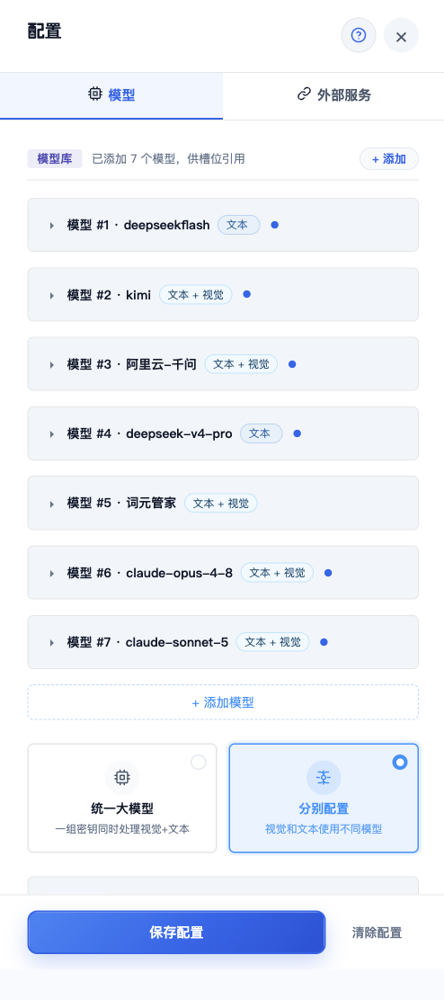
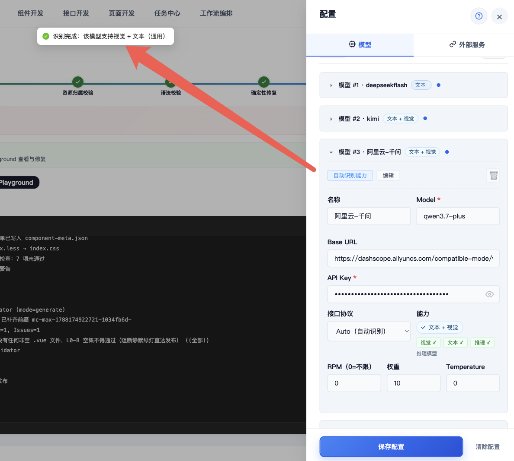
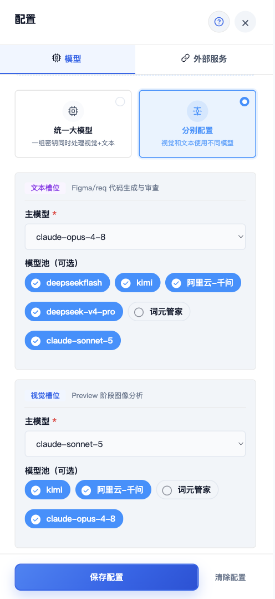
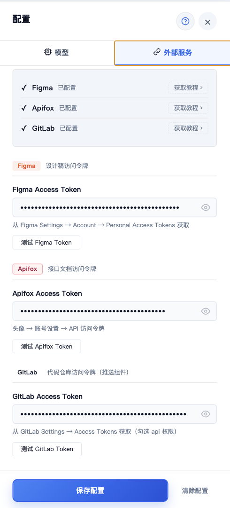
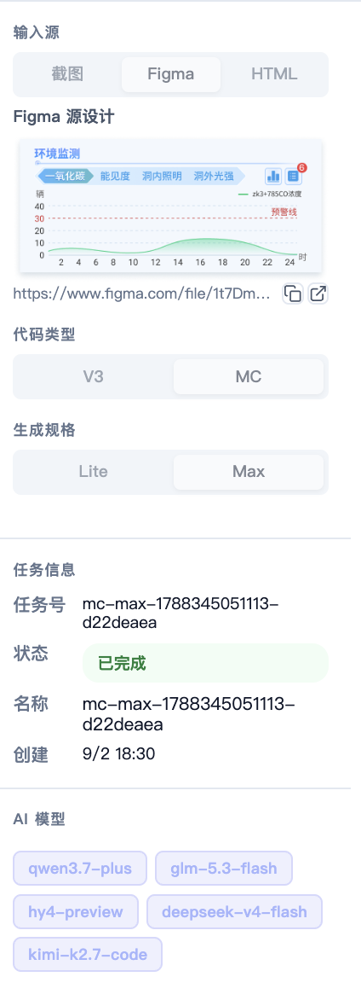
bg / bg-* / 含「背景」icon / icon-* / arrowimg / img-* / 含「图片」「头像」Frame 123 / Rectangle 45 等无意义命名icons 容器@echarts/折线图 / @echarts/柱状图@antd/Table / @antd/Modal平台「生成」页，粘贴 Figma 组件 / 页面链接
微码 / Vue3
平台按规范产出组件（含 index.vue / styles / declare 等文件）
还原度、规范遵循即时可见
首次建议用一个真实、图层规范的 Figma 组件练手；强调"还原度 + 规范"而非"花哨"
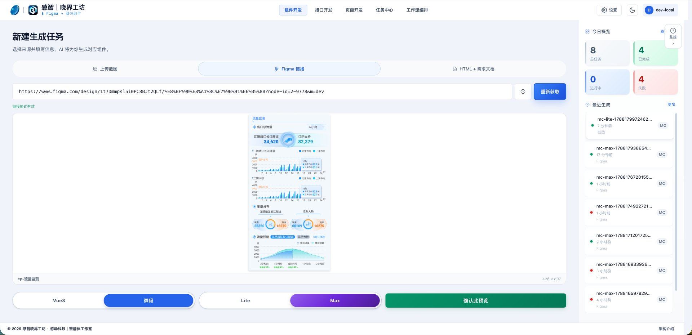
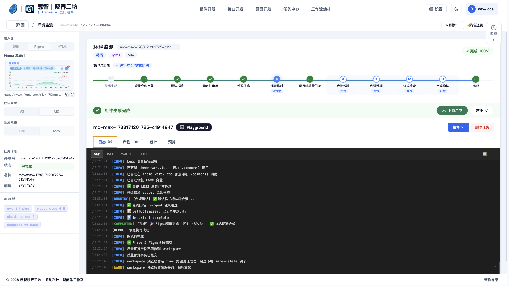
同「生成」页，选 Lite 模式，贴页面 / 组件截图（或 Figma URL）
简单布局 + 基础交互 + 图表，秒级出
后台管理页、数据看板、表单页、图表卡、活动 / 落地页
Lite 快但不重细节；要还原度用完整版
先用 Lite 快速看到效果，再决定要不要升级到完整版
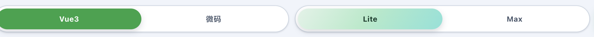
Lite 快速生成：贴页面 / 组件截图或 Figma URL，秒级出简单布局 + 基础交互 + 图表，适合先快速看效果。
点击截图查看清晰原图
组件工作台内置 Monaco IDE（格式化 + 行号），可在隔离沙盒里直接改代码；也支持用自然语言让 AI 对话式修改组件，改坏只影响沙盒，不影响线上。
两种迭代方式：① 工作台内手动改代码并实时预览；② AI 对话式修改，描述需求即可改组件。
点击截图查看清晰原图
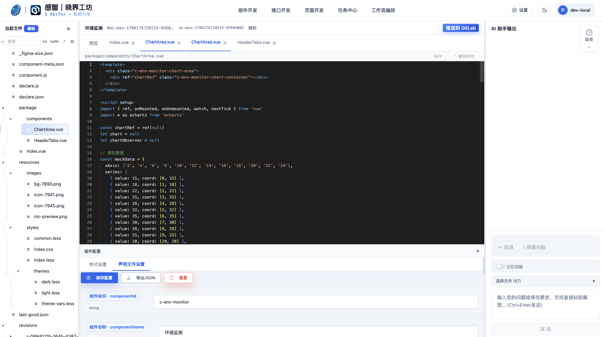
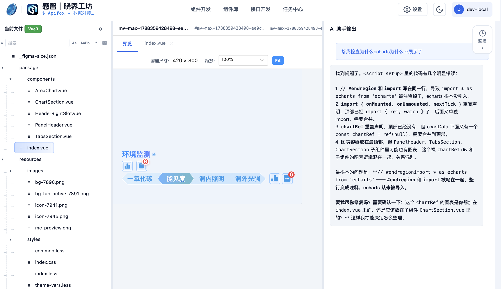
生成后平台自动跑质量门禁，按「规范 / 样式 / 结构」校验
组件规范（Vue3/微码/一体化）、LESS 编译、SFC 结构、资源引用合法性（含禁止宿主 Tailwind / 原子类泄漏）
通过 → 可交付；BLOCK → 拦截并自动重试修正（重试耗尽则禁止发布，避免劣质产物外流）
报错带 文件 / 行 / 列 + 具体错误 + 代码上下文 + 修复建议，逐条定位
在线编辑问题文件 → 保存（新快照）→ 重新校验 → 刷新预览，形成闭环
即便门禁未过，也可「强制预览」看效果，先评估再决定改不改
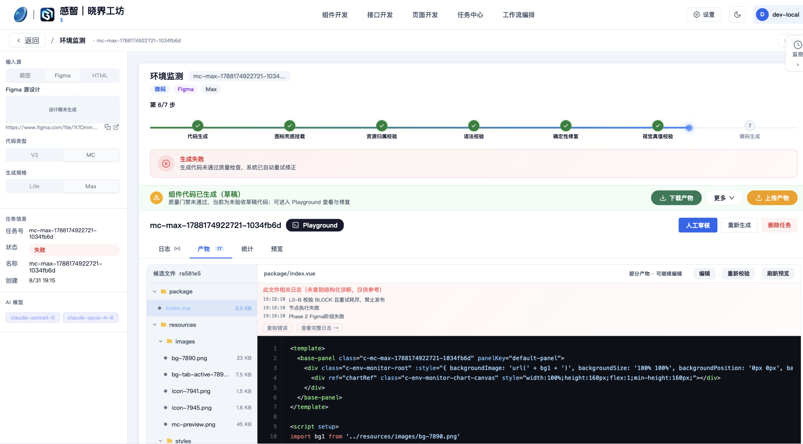
质量门禁 L0-B 未通过的失败详情：明确标出 BLOCK 项与涉及的规范 / 可编译检查。这是"对抗 + 审查"协同的硬落地——不过关直接拦下。
点击截图查看清晰原图
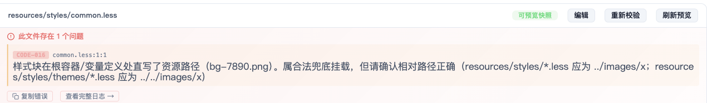
每条报错带 文件 / 行 / 列 + 具体错误 + 代码上下文 + 修复建议，可逐条定位，不用自己猜。
点击截图查看清晰原图
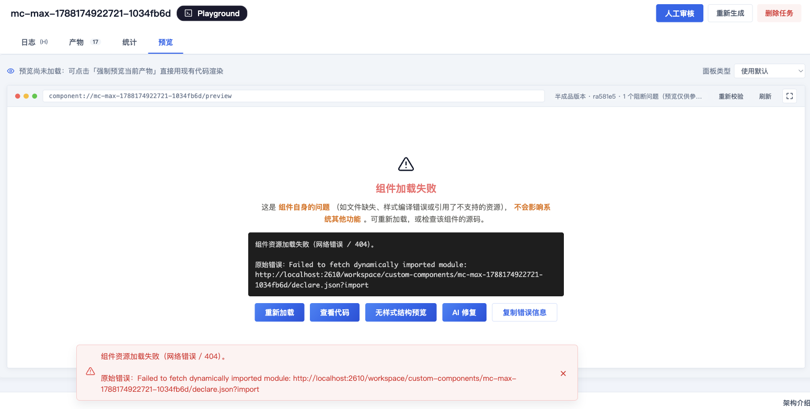
平台据报错自动重试修正：把错误回灌给生成 / 修复 agent，定位并改对应文件，再重新校验。
点击截图查看清晰原图
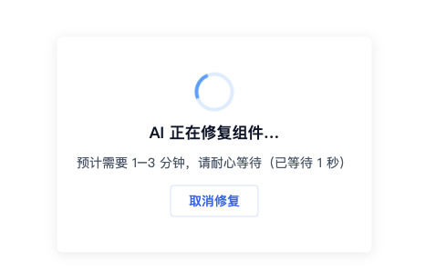
修正结果回写并重新通过门禁；重试耗尽仍不过则禁止发布，避免劣质产物外流。你也可"强制预览"先看效果。
点击截图查看清晰原图
平台下载 zip，或一键推 Git（门禁通过后）
按平台组件引用方式，在业务页登记 / 引入组件，传参即可
把生成目录拷入工程 components/，按普通 Vue3 组件 import 使用
组件内已按 APIFOX 绑定真实接口字段，联调时核对字段即可
改样式 / 逻辑回到平台在线迭代，或本地改后重新推送，保持单一来源
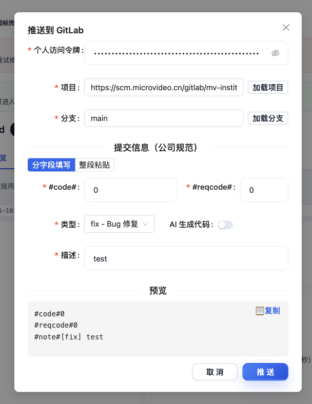
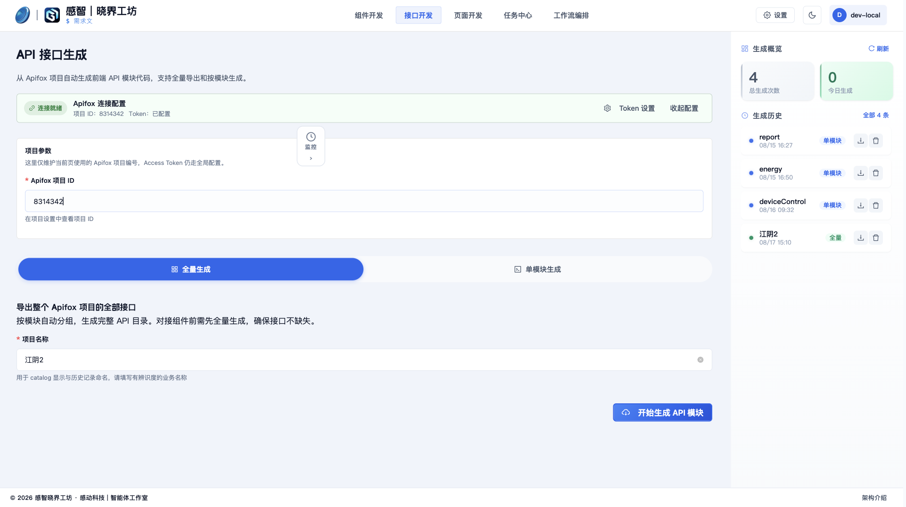
在「AI 工作区」选 API 接口生成，绑定 APIFOX 目录或粘贴需求，平台据真实接口目录生成前端调用代码（含 service / 类型 / mock）。
点击截图查看清晰原图
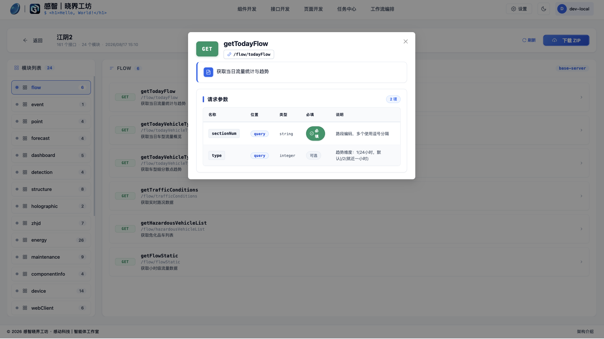
接口详情页展示生成的 service 函数、入参 / 出参类型、字段映射与 mock 数据，与 APIFOX 目录同源，便于联调核对。
点击截图查看清晰原图
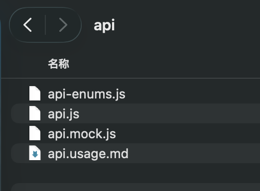
可直接下载生成的接口文件（.ts / .js 等），拷贝进工程即用；字段按 APIFOX 对齐，减少手写出错。
点击截图查看清晰原图
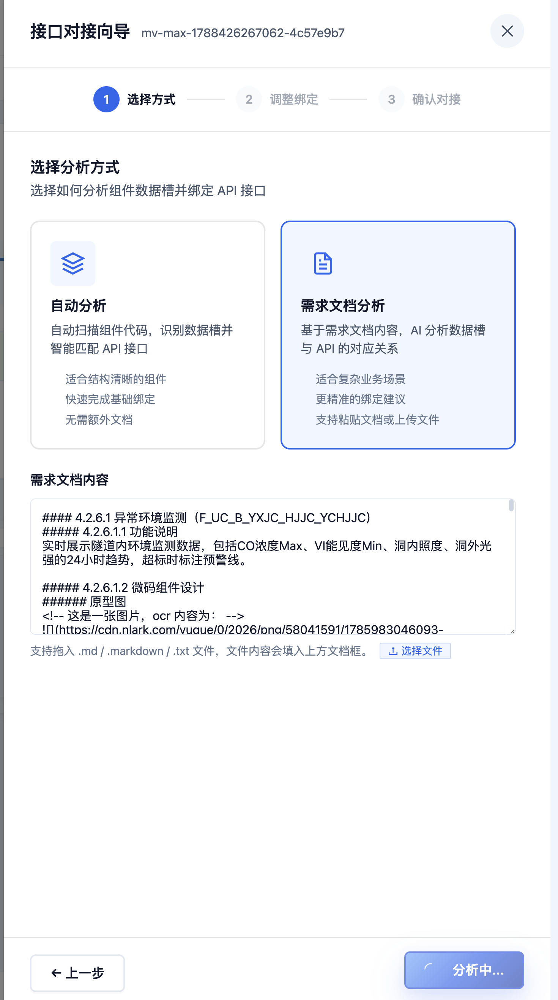
接口对接向导提供两种分析方式：
自动分析 — 自动扫描组件代码，识别数据槽并智能匹配 API 接口，适合结构清晰的组件，快速完成基础绑定。
需求文档分析 — 基于需求文档内容，AI 分析数据槽与 API 的对应关系，适合复杂业务场景，支持粘贴文档或上传 .md / .txt 文件。
点击截图查看清晰原图
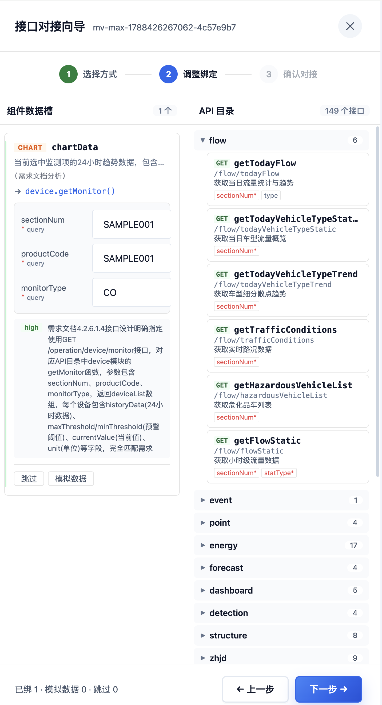
AI 分析完成后进入调整绑定页面：左侧展示组件数据槽（如 CHART chartData），右侧展示 API 目录（149 个接口，按模块分组）。
AI 已自动推荐接口映射（如 device.getMonitor()），并给出推荐理由。可逐项确认、跳过或模拟数据。
点击截图查看清晰原图
检查设计稿图层 / 规范映射，人工调整不可少
更适合后台管理系统，正式复杂页用完整版
看行列级报错 → 在线改 → 重校验 → 强制预览
AI 推荐的接口不一定对，需要结合辅助文档核对
批量生产、Figma 整理自动化、常见问题解答
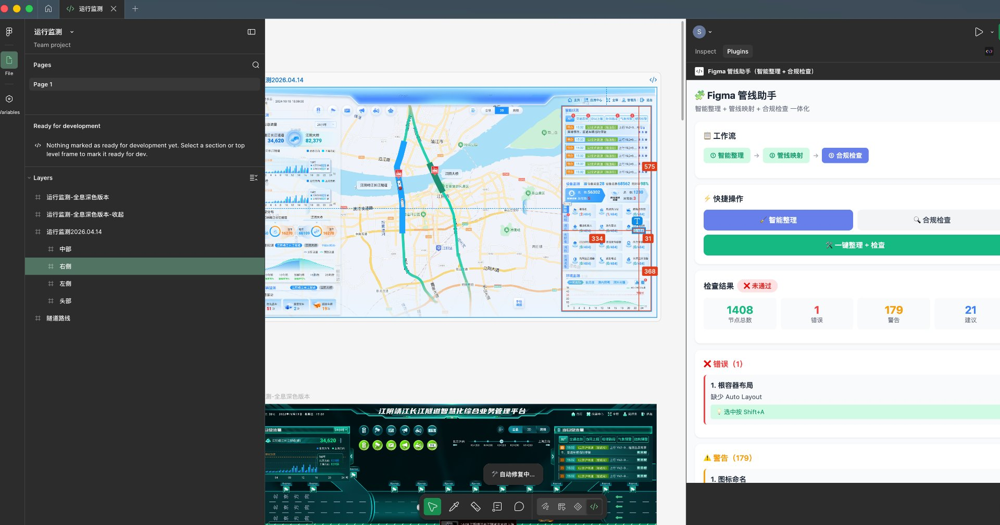
| 阶段 | 🔴 现在 | 🟡 插件辅助 | 🟢 Vision 增强 |
|---|---|---|---|
| 整理耗时 | 5-15 分钟/组件 | 2-3 分钟/组件 | 0-1 分钟/组件 |
| 命名规范 | 必须人工规范 | 插件自动检查 | Vision 兜底识别 |
| 还原度 | 90%+（规范稿） | 90%+（规范稿） | 70-85%（任意稿） |
平台演进方向与共建邀请